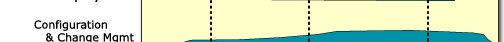
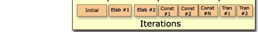

Rational Unified Process: Overview
 |
|
 Click on an area of the screen for more information. |
The Rational Unified Process® or RUP® product is a software engineering process. It provides a disciplined approach to assigning tasks and responsibilities within a development organization. Its goal is to ensure the production of high-quality software that meets the needs of its end users within a predictable schedule and budget.
The figure at the top shows the overall architecture of the RUP.
The RUP has two dimensions:
- the horizontal axis represents time and shows the lifecycle aspects of the process as it unfolds
- the vertical axis represents disciplines, which group activities logically by nature.
The first dimension represents the dynamic aspect of the process as it is enacted, and it is expressed in terms of phases, iterations, and milestones.
The second dimension represents the static aspect of the process: how it is described in terms of process components, disciplines, activities, workflows, artifacts, and roles (see Key Concepts).
The graph shows how the emphasis varies over time. For example, in early iterations, we spend more time on requirements, and in later iterations we spend more time on implementation.